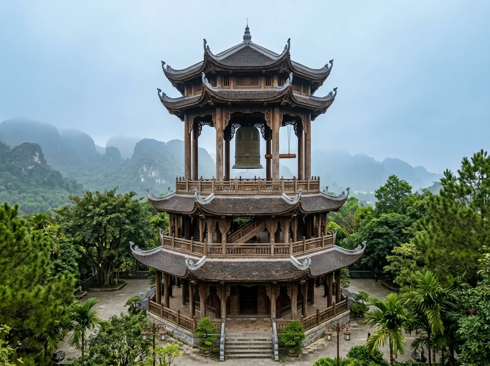
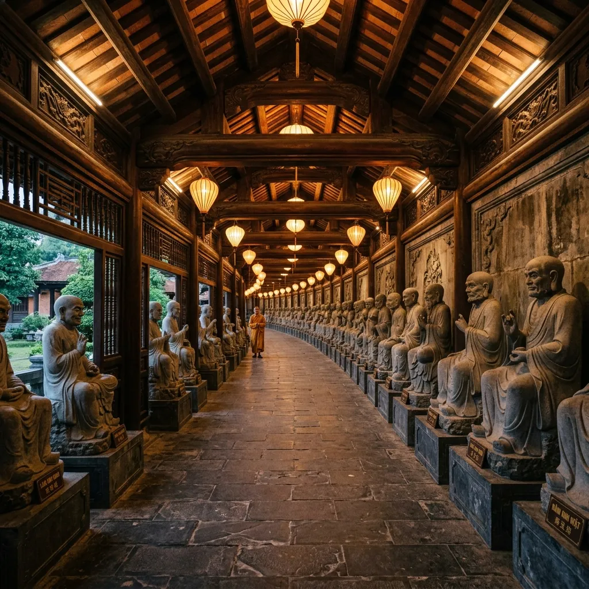
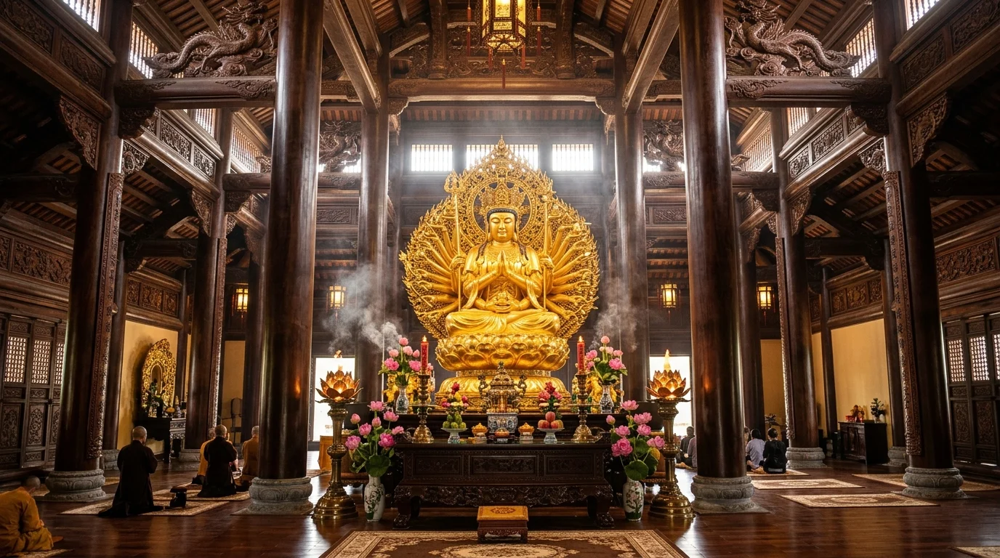
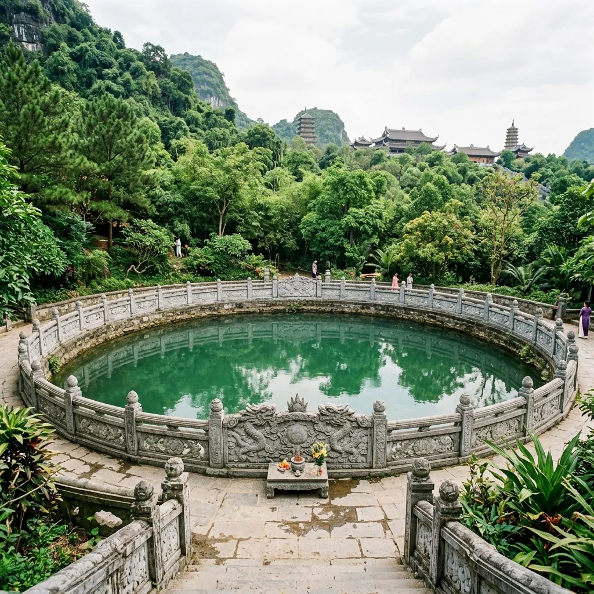

🧭 1. Tổng Quan Quần Thể Chùa Bái Đính
Cái tên "Bái Đính" mang ý nghĩa sâu xa: "Bái" là cúng bái, kính ngưỡng đất trời Tiên Phật; "Đính" là đỉnh non cao linh thiêng. Nơi đây từng được Đức Thiền sư Nguyễn Minh Không — Quốc sư thời Lý — chọn làm nơi khai hoang dựng chùa, tìm cây thuốc nam chữa bệnh "hóa hổ" cho Vua Lý Thần Tông vào năm 1136.
Ngày nay, Bái Đính nắm giữ hàng loạt kỷ lục châu Á và Việt Nam: Tượng Phật Thích Ca bằng đồng dát vàng lớn nhất châu Á (100 tấn), Tháp chuông có quả Đại Hồng Chung lớn nhất Việt Nam (36 tấn), Hành lang 500 tượng La Hán bằng đá xanh dài nhất châu Á (1.700m), và Giếng Ngọc cổ lớn nhất Việt Nam.
📜 2. Hướng Dẫn Nghi Thức Thắp Hương & Đọc Văn Khấn Tại Bái Đính
Để chuyến chiêm bái trọn vẹn phước duyên và không phạm phải những điều kiêng kỵ nơi cửa thiền, quý Phật tử và du khách cần thấu hiểu các nguyên tắc cốt lõi:
🏮 3 Quy Chuẩn Cốt Lõi Khi Hành Lễ Tại Chùa Bái Đính
🕯️ Thắp Hương Đúng Cách
Quy tắc "Một Nén Tâm Hương": Chỉ thắp hương tại Lư hương lớn đặt ngoài sân trước mỗi tòa điện. Tuyệt đối không cắm hương vào các bát hương nhỏ bên trong điện để tránh ngạt khói và phòng hỏa hoạn.
🗣️ Cách Đọc Văn Khấn
Đọc thầm trong tâm hoặc lầm rầm vừa đủ tai mình nghe. Không xướng to tên tuổi, tiền bạc hay nguyện vọng riêng tư làm ảnh hưởng đến không gian thanh tịnh của người đồng đạo xung quanh.
🍎 Sắm Lễ Chay Thuần Khiết
Tại Bái Đính, toàn bộ các điện Phật (Quán Âm, Pháp Chủ, Tam Thế) 100% chỉ dâng lễ chay (hoa tươi, chuối, bưởi, oản phẩm, chè xôi, trà thơm). Tuyệt đối không mang lễ mặn hay vàng mã vào khu thờ tự.
⛩️ 3. Lộ Trình Hành Lễ Tuần Tự 9 Ban Thờ & Trải Nghiệm Chánh Niệm
Lộ trình chuẩn phong tục đi từ thấp lên cao (từ cổng Tam Quan đến đỉnh Điện Tam Thế, sang Bảo Tháp và Giếng Ngọc, kết thúc tại Bái Đính Cổ Tự):
Cổng Tam Quan Nội sừng sững làm hoàn toàn bằng gỗ tứ thiết, cao 16.5m với 3 tầng mái cong uy nghiêm. Đây là ranh giới phân định giữa cõi tục và cõi Phật thiêng liêng.
🚪 Nghi Thức Vào Cổng
- Lối đi: Đi vào cửa bên phải (Cửa Giả quan — tượng trưng cho lòng từ bi) và đi ra cửa bên trái (Cửa Không quan — tượng trưng cho trí tuệ).
- Kiêng kỵ: Không đi cửa chính giữa (Cửa Trung quan) và tuyệt đối không giẫm chân lên bậu cửa gỗ.
🙏 Lễ Bái Chư Hộ Pháp
- Tại Tam Quan tôn trí 2 pho tượng Hộ Pháp bằng đồng cao 5.5m (Khuyến Thiện và Trừng Ác).
- Chắp hai tay trước ngực xá chào 3 lạy để xin phép chư vị Thiện Thần cho phép nhập cảnh già lam tu tâm bái Phật.

Gác chuông bát giác 3 tầng mái cong cao 22m, nơi treo quả chuông đồng Đại Hồng Chung nặng 36 tấn đạt kỷ lục lớn nhất Việt Nam. Dưới sàn tháp chuông đặt chiếc Trống đồng nặng 70 tấn.
🔔 Ý Nghĩa & Cách Thắp Hương
- Thắp hương: Thắp 1 nén hương tại lư đồng trước tháp chuông.
- Ý nghĩa: Tiếng chuông chùa mang âm ba vi diệu, thức tỉnh lòng từ bi trong mỗi con người, rửa sạch bụi trần phiền não trước khi tiến bước lên chiêm bái Tam Bảo.
🧘 Nghi Thức Phát Nguyện
- Đứng tĩnh lặng dưới vòm tháp chuông, nhắm mắt hít thở sâu 3 nhịp.
- Lắng nghe tiếng chuông đồng ngân vang, thầm niệm bài kệ chuông để tâm hồn lắng đọng thảnh thơi.
Thỉnh Đại Hồng Chung Bái Đính (Âm Vang 6.5 Giây)
Chạm nút để thỉnh chuông đồng ngân vang và nuôi dưỡng sự tĩnh tại

Hai dãy hành lang La Hán dài tổng cộng 1.700m chạy dọc triền núi, che chở cho 500 pho tượng La Hán bằng đá xanh nguyên khối do nghệ nhân làng đá Ninh Vân đục đẽo công phu với thần thái biểu cảm không một vị nào trùng lặp.
🚶 Nghi Thức Thiền Hành
- Tâm thế: Bước đi chậm rãi, thư thả, mỗi bước chân chạm đất thở một nhịp nhẹ nhàng.
- Chiêm nghiệm: Mỗi vị La Hán biểu trưng cho một trạng thái tâm lý nhân gian (hỷ, nộ, ái, ố) để nhắc nhở con người tự soi chiếu chính mình.
⚠️ Lưu Ý Ứng Xử Tôn Nghiêm
- Tuyệt đối không sờ tay: Không xoa tay vào đầu gối hay bàn chân các tượng La Hán làm mòn và biến màu đá xanh quý giá.
- Không đặt tiền lẻ: Không nhét tiền lẻ vào tay hoặc vạt áo tượng đá.
Gõ Mõ Chánh Niệm Dọc Hành Lang La Hán
Số bước chân chánh niệm: 0 lần gõ

Điện Quán Thế Âm gồm 7 gian bằng gỗ lim uy nghi. Bên trong tôn trí pho tượng Bồ Tát Quán Thế Âm nghìn mắt nghìn tay bằng đồng đúc liền khối dát vàng nặng 90 tấn, ngự trên tòa sen thanh tịnh.
🕯️ Cách Thắp Hương & Dâng Lễ
- Hương: Thắp 1 nén tâm hương tại lư đồng lớn trước sân điện.
- Lễ vật: Hoa sen tươi, hoa huệ trắng, ngũ quả tươi tốt, nước trong thanh khiết. Tránh dâng lễ mặn hay vàng mã.
🙏 Cầu Nguyện Gì Tại Điện Quan Âm?
- Cầu xin Bồ Tát rưới nước cành dương che chở cho cha mẹ khỏe mạnh bình an.
- Cầu xin con cái thảo hiền, giải trừ tai ương tật bệnh, gia đạo êm ấm thuận hòa.
Dâng Nén Tâm Hương Thành Kính Trước Ban Quán Âm
Trầm hương thanh khiết kết nối tấm lòng hướng thiện

Tòa điện nguy nga gồm 5 gian cao 30m, thờ pho tượng Đức Phật Thích Ca Mâu Ni bằng đồng nguyên khối dát vàng nặng 100 tấn cao 10m đạt kỷ lục châu Á, tay bắt ấn chuyển pháp luân.
🕯️ Cách Thắp Hương & Đảnh Lễ
- Hương: Thắp 1 nén hương tại đỉnh đồng trước cửa điện.
- Lễ Phật: Thực hiện nghi thức ba lạy ngũ thể đầu địa (hai bàn tay, hai đầu gối và trán chạm đất) để thể hiện sự quy phục hoàn toàn trước trí tuệ của Đấng Giác Ngộ.
💡 Ý Nghĩa Tâm Linh
- Cầu xin trí tuệ sáng tỏ, diệt trừ vô minh, biết nhìn nhận đúng sai, giữ cho tâm luôn ngay thẳng, thanh tịnh trước cám dỗ danh lợi.
Tọa lạc trên đỉnh đồi cao 76m so với mực nước biển, Điện Tam Thế là tòa kiến trúc nguy nga nhất với 3 tầng mái cong đồ sộ. Bên trong thờ 3 pho tượng Phật Tam Thế (Quá khứ, Hiện tại, Vị lai) bằng đồng đúc liền khối, mỗi pho nặng 50 tấn.
🕯️ Ý Nghĩa Ba Đời Chư Phật
- Quá khứ: Phật A Di Đà (biết ơn tiền nhân, tổ tiên).
- Hiện tại: Phật Thích Ca (trân quý từng giây phút sống).
- Tương lai: Phật Di Lặc (hy vọng tương lai tươi sáng, an lạc).
🙏 Cách Thắp Hương & Hồi Hướng
- Dâng nén tâm hương cầu nguyện cho quốc thái dân an, hồi hướng công đức cho ông bà cửu huyền thất tổ vãng sinh tịnh độ.
Dâng Nén Tâm Hương Ba Đời Chư Phật
Hồi hướng phước đức sâu dày cho gia đạo

Bảo tháp 13 tầng cao 100m, được ốp bằng đá nung hoàn toàn của làng gốm Bát Tràng. Tầng thứ 13 là nơi tôn nghiêm tôn trí Ngọc Xá Lợi Phật Thích Ca Mâu Ni được rước từ Ấn Độ và Myanmar về Việt Nam.
🗼 Chiêm Bái Xá Lợi
- Du khách đi thang máy lên tầng 13, đi nhiễu quanh bảo tháp theo chiều kim đồng hồ 3 vòng để tỏ lòng thành kính tuyệt đối.
- Từ đỉnh bảo tháp, phóng tầm mắt bao quát toàn cảnh núi non Tràng An hùng vĩ.
🧘 Tĩnh Tọa Thiền Định 3 Phút
- Đón làn gió mát lành từ đỉnh tháp cao, lắng nghe tiếng chuông gió ngân nga, giữ cho thân tâm bất động và cảm nhận sự hòa hợp giữa con người và vũ trụ.
Tĩnh Tọa Thiền Định Đỉnh Bảo Tháp (3 Phút)
Đồng hồ thiền: 03:00

Giếng Ngọc hình mặt nguyệt có đường kính 30m, sâu 6m với làn nước xanh trong vắt chưa bao giờ cạn đáy qua cả ngàn năm lịch sử. Tương truyền, gần 1.000 năm trước, Quốc sư Nguyễn Minh Không đã nằm mộng thấy thần nhân chỉ lối lấy nước giếng này để sắc thuốc cứu chữa Vua Lý Thần Tông.
💧 Rửa Tay Nước Giếng Ngọc
- Du khách dùng gáo đồng múc nước giếng rửa tay, rửa mặt để thanh tẩy bụi trần, cầu xin sức khỏe dồi dào, tâm hồn thanh sạch mát lành.
🌳 Treo Dải Lụa Cội Bồ Đề
- Bên bờ giếng ngọc là cội Bồ Đề chiết từ cây Bồ Đề Đạo Tràng Ấn Độ rợp bóng mát, nơi du khách treo dải lụa gửi gắm tâm nguyện bình an.
Gửi Ước Nguyện Lên Cội Bồ Đề Giếng Ngọc Bái Đính
Lưu lại lời cầu an cho cha mẹ và gia quyến

Nằm cách Tân tự khoảng 800m trên sườn núi Đính tĩnh mịch, du khách bước qua 300 bậc đá cổ kính để trở về chốn tổ sơn môn khởi dựng từ thế kỷ XII. Nơi đây gồm Hang Sáng thờ Phật và Thần Cao Sơn, Hang Tối thờ Mẫu Thượng Ngàn, và Đền thờ Quốc Sư Nguyễn Minh Không.
🕯️ Hang Sáng (Thờ Phật & Thần Cao Sơn)
- Hang dài 25m, rộng 15m, ánh sáng tự nhiên rọi vào vách đá lung linh.
- Dâng hương lễ Phật cầu quốc thái dân an, lễ Thần Cao Sơn trấn giữ non nam cố đô.
🏮 Hang Tối (Thờ Mẫu Thượng Ngàn & Tiên Cô)
- Hệ thống thạch nhũ rủ xuống như rèm ngọc, giọt nước rơi róc rách. Dâng lễ chay tịnh cầu tài lộc, bình an, con cái.
- Lễ Đền Thánh Nguyễn Minh Không tri ân vị danh y lập chùa cứu dân.
🧭 4. Lịch Trình Chiêm Bái 1 Ngày Tối Ưu Nhất
Gợi ý lộ trình khoa học giúp tiết kiệm sức lực và chiêm bái trọn vẹn cả Tân tự và Cổ tự:
Buổi Sáng (08h00 - 11h30): Chiêm Bái Tân Tự Đi Từ Thấp Lên Cao
- 08h00: Di chuyển từ bãi xe trung tâm lên Cổng Tam Quan Nội, chuẩn bị thân tâm thanh tịnh.
- 08h30: Thỉnh Đại Hồng Chung tại Tháp Chuông bát giác, lắng lòng tịnh tâm.
- 09h00: Đi bộ thiền hành dọc Hành Lang 500 La Hán lên Điện Quán Thế Âm (dâng hương khấn Đức Mẹ Từ Bi).
- 10h00: Tiếp tục lên Điện Giáo Chủ Thích Ca Mâu Ni và chinh phục Điện Tam Thế trên đỉnh đồi cao 76m.
- 11h00: Đi thang máy lên tầng 13 Bảo Tháp ngắm toàn cảnh non nước Cố đô.
Buổi Trưa (11h30 - 13h00): Thưởng Thức Cơm Chay Thanh Đạm
Dừng chân tại nhà hàng cơm chay Bái Đính hoặc khu vực chân núi, thưởng thức các món ăn thực dưỡng thuần chay: nem nấm chay, canh rong biển hạt sen, giò lụa chay, đậu hũ sốt nấm thơm ngon thanh tịnh.
Buổi Chiều (13h30 - 16h30): Thăm Giếng Ngọc & Leo Núi Lên Bái Đính Cổ Tự
- 13h30: Ghé thăm Giếng Ngọc cổ hình bán nguyệt, rửa tay nước giếng ngọc và treo dải lụa cầu an cội Bồ Đề.
- 14h30: Men theo con đường rợp bóng cây cổ thụ, vượt 300 bậc đá lên Bái Đính Cổ Tự.
- 15h00: Dâng hương tại Hang Sáng (thờ Phật), chiêm bái Hang Tối (thờ Mẫu) và dâng lễ Đức Thánh Nguyễn Minh Không.
- 16h30: Xuống núi trở lại bãi đỗ xe trung tâm, kết thúc chuyến hành hương an lạc.